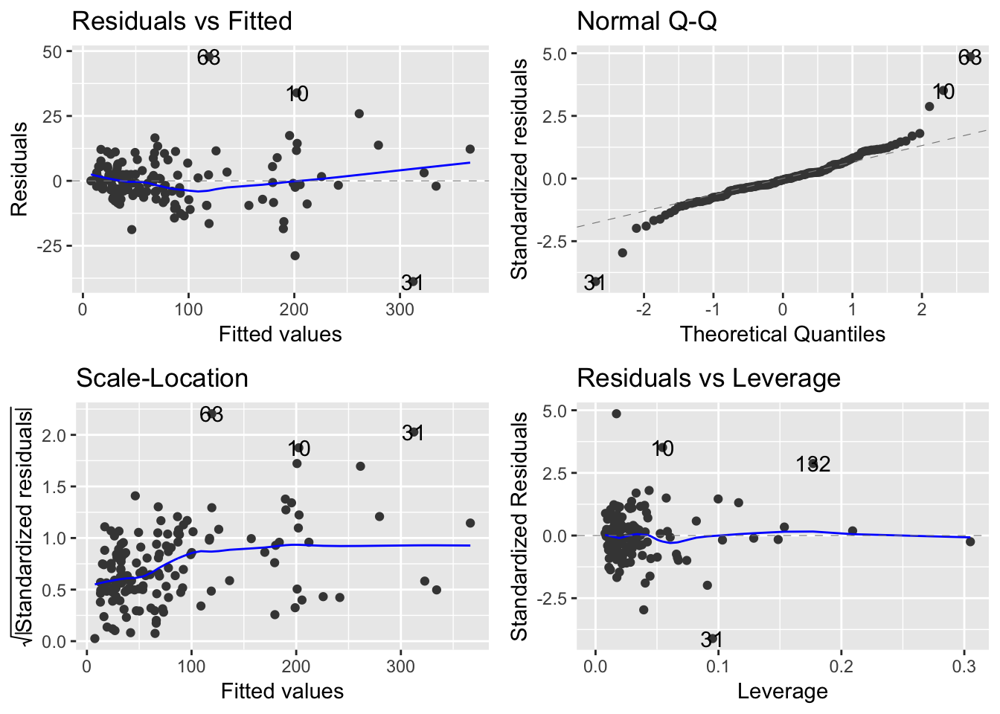

Chapter 8 Reporting data results #2
Download a pdf of the lecture slides covering this topic.
8.1 Functions
As you move to larger projects, you will find yourself using the same code a lot.
Examples include:
- Reading in data from a specific type of equipment (air pollution monitor, accelerometer)
- Running a specific type of analysis
- Creating a specific type of plot or map
If you find yourself cutting and pasting a lot, convert the code to a function.
Advantages of writing functions include:
- Coding is more efficient
- Easier to change your code (if you’ve cut and paste code and you want to change something, you have to change it everywhere - this is an easy way to accidentally create bugs in your code)
- Easier to share code with others
You can name a function anything you want (although try to avoid names of preexisting-existing functions). You then define any inputs (arguments; separate multiple arguments with commas) and put the code to run in braces:
Here is an example of a very basic function. This function takes a number as input and adds 1 to that number.
## [1] 4## [1] 0- Functions can input any type of R object (for example, vectors, data frames, even other functions and ggplot objects)
- Similarly, functions can output any type of R object
- When defining a function, you can set default values for some of the parameters
- You can explicitly specify the value to return from the function
- There are ways to check for errors in the arguments a user inputs to the function
For example, the following function inputs a data frame (datafr) and a one-element vector (child_id) and returns only rows in the data frame where it’s id column matches child_id. It includes a default value for datafr, but not for child_id.
subset_nepali <- function(datafr = nepali, child_id){
datafr <- datafr %>%
filter(id == child_id)
return(datafr)
}If an argument is not given for a parameter with a default, the function will run using the default value for that parameter. For example:
## id sex wt ht mage lit died alive age wt_over_13
## 1 120011 Male 12.8 91.2 35 0 2 5 41 FALSE
## 2 120011 Male 12.8 93.9 35 0 2 5 45 FALSE
## 3 120011 Male 13.1 95.2 35 0 2 5 49 TRUE
## 4 120011 Male 13.8 96.9 35 0 2 5 53 TRUE
## 5 120011 Male NA NA 35 0 2 5 57 NAIf an argument is not given for a parameter without a default, the function call will result in an error. For example:
## Error in filter_impl(.data, quo): Evaluation error: argument "child_id" is missing, with no default.By default, the function will return the last defined object, although the choice of using return can affect printing behavior when you run the function. For example, I could have written the subset_nepali function like this:
In this case, the output will not automatically print out when you call the function without assigning it to an R object:
However, the output can be assigned to an R object in the same way as when the function was defined without return:
## id sex wt ht mage lit died alive age wt_over_13
## 1 120011 Male 12.8 91.2 35 0 2 5 41 FALSE
## 2 120011 Male 12.8 93.9 35 0 2 5 45 FALSE
## 3 120011 Male 13.1 95.2 35 0 2 5 49 TRUE
## 4 120011 Male 13.8 96.9 35 0 2 5 53 TRUE
## 5 120011 Male NA NA 35 0 2 5 57 NAR is very “good” at running functions! It will look for (scope) the variables in your function in various places (environments). So your functions may run even when you don’t expect them to, potentially, with unexpected results!
The return function can also be used to return an object other than the last defined object (although this doesn’t tend to be something you need to do very often). If you did not use return in the following code, it will output “Test output”:
subset_nepali <- function(datafr = nepali, child_id){
datafr <- datafr %>%
filter(id == child_id)
a <- "Test output"
}
(subset_nepali(child_id = "120011"))## [1] "Test output"Conversely, you can use return to output datafr, even though it’s not the last object defined:
subset_nepali <- function(datafr = nepali, child_id){
datafr <- datafr %>%
filter(id == child_id)
a <- "Test output"
return(datafr)
}
subset_nepali(child_id = "120011")## id sex wt ht mage lit died alive age wt_over_13
## 1 120011 Male 12.8 91.2 35 0 2 5 41 FALSE
## 2 120011 Male 12.8 93.9 35 0 2 5 45 FALSE
## 3 120011 Male 13.1 95.2 35 0 2 5 49 TRUE
## 4 120011 Male 13.8 96.9 35 0 2 5 53 TRUE
## 5 120011 Male NA NA 35 0 2 5 57 NAYou can use stop to stop execution of the function and give the user an error message. For example, the subset_nepali function will fail if the user inputs a data frame that does not have a column named “id”:
Error: comparison (1) is possible only for
atomic and list types You can rewrite the function to stop if the input datafr does not have a column named “id”:
subset_nepali <- function(datafr = nepali, child_id){
if(!("id" %in% colnames(datafr))){
stop("`datafr` must include a column named `id`")
}
datafr <- datafr %>%
filter(id == child_id)
return(datafr)
}
subset_nepali(datafr = data.frame(wt = rnorm(10)),
child_id = "12011")Error in subset_nepali(datafr = data.frame(wt = rnorm(10)),
child_id = "12011") :
`datafr` must include a column named `id`The stop function is particularly important if the function would keep running with the wrong input, but would result in the wrong output.
You can also output warnings and messages using the functions warning and message.
8.1.1 if / else statements
There are other control structures you can use in your R code. Two that you will commonly use within R functions are if and ifelse statements.
An if statement tells R that, if a certain condition is true, do run some code. For example, if you wanted to print out only odd numbers between 1 and 5, one way to do that is with an if statement: (Note: the %% operator in R returns the remainder of the first value (i) divided by the second value (2).)
## [1] 1
## [1] 3
## [1] 5The if statement runs some code if a condition is true, but does nothing if it is false. If you’d like different code to run depending on whether the condition is true or false, you can us an if / else or an if / else if / else statement.
## [1] 1
## [1] "2 is even"
## [1] 3
## [1] "4 is even"
## [1] 5What would this code do?
for(i in 1:100){
if(i %% 3 == 0 & i %% 5 == 0){
print("FizzBuzz")
} else if(i %% 3 == 0){
print("Fizz")
} else if(i %% 5 == 0){
print("Buzz")
} else {
print(i)
}
}If / else statements are extremely useful in functions.
In R, the if statement evaluates everything in the parentheses and, if that evaluates to TRUE, runs everything in the braces. This means that you can trigger code in an if statement with a single-value logical vector:
## [1] "It's the weekend!"This functionality can be useful with parameters you choose to include when writing your own functions (e.g., print = TRUE).
8.1.2 Some other control structures
The control structure you are most likely to use in data analysis with R is the “if / else” statement. However, there are a few other control structures you may occasionally find useful:
nextbreakwhile
You can use the next structure to skip to the next round of a loop when a certain condition is met. For example, we could have used this code to print out odd numbers between 1 and 5:
## [1] 1
## [1] 3
## [1] 5You can use break to break out of a loop if a certain condition is met. For example, the final code will break out of the loop once i is over 2, so it will only print the numbers 1 through 3:
## [1] 1
## [1] 2
## [1] 38.2 Running the same function multiple times
We often want to perform the same function on every element of a list (i.e. loop across every element). There is a whole family of map functions, within the purrr package designed to help us do this. For example:
map: Apply a function over each element of a list or column in a dataframe.map_df: Likemapbut returns a dataframe.map_dbl: Likemap, but returns a numeric vector.
Here is the syntax for map:
I’ll use the worldcup data as an example:
## Shots Passes Tackles Saves
## Abdoun 0 6 0 0
## Abe 0 101 14 0
## Abidal 0 91 6 0
## Abou Diaby 1 111 5 0
## Aboubakar 2 16 0 0
## Abreu 0 15 0 0Take the mean of all columns:
## $Shots
## [1] 2.304202
##
## $Passes
## [1] 84.52101
##
## $Tackles
## [1] 4.191597
##
## $Saves
## [1] 0.6672269Take the sum of all columns and return a dataframe:
## # A tibble: 1 x 4
## Shots Passes Tackles Saves
## <int> <int> <int> <int>
## 1 1371 50290 2494 397You can use your own function with any of the map functions. For example, if you wanted to calculate a value for each category that is a weighted mean, you could run:
weighted_mean <- function(soccer_stats, weight = runif(595, 0, 1)){
out <- mean(soccer_stats * weight)
return(out)
}
purrr::map(ex, weighted_mean)## $Shots
## [1] 1.189342
##
## $Passes
## [1] 42.25002
##
## $Tackles
## [1] 2.004402
##
## $Saves
## [1] 0.288146The map() function will apply a function across a list. The different elements of the list do not have to be the same length (unlike a data frame, where the columns all have to have the same length). First let’s create a list to work with:
## $a
## [1] 1 2 3 4 5
##
## $b
## [1] 1.4585007 -0.8337044 0.4971937
##
## $c
## [1] "a" "b" "c" "d"This call will calculate the mean of each element:
## $a
## [1] 3
##
## $b
## [1] 0.3739967
##
## $c
## [1] NAYou can include arguments for the function that you specify with .f, and they’ll be passed to that function. For example, to get the first value of each element, you can run:
## $a
## [1] 1
##
## $b
## [1] 1.458501
##
## $c
## [1] "a"The map_chr() function also applies a function over a list, but it returns a character vector rather than a list:
## a b c
## "1" "1.458501" "a"
You can use the apply functions in base R to achieve some of the same functionality as the map functions. However, the map functions work better alongside other tidyverse functions. The apply functions are useful if you are working with matrices.
You can also use for loops in R, but it is much more elegant and efficient to use the map functions instead.
8.2.1 But, but what about nested loops etc?
The trick with purrr is to nest your dataset rather than nest multiple loops. There is no need for all this complexity:
for(i in 1:seq_along(x)){
for(j in 1:seq_along(y)){
for(k in 1:seq_along(z)){
f(x[i],y[j],z[k],...)
}
}
}Instead we can use nest() to create a tidy, easy to follow sequence of steps:
Sometimes you’ll want to supply more than one argument to a function in parallel. The purrr package provides the pmap function to achieve this. You can provide a list of arguments to pmap and it will run through them in parallel. The “conventional” for loop method would look something like this:
With purrr::pmap() we can reduce the complexity of our code, limiting the potential for us to make mistakes and making mistakes easier to spot. Let’s start by defining a function with multiple arguments:
fantasy_points <- function(Position, Time, Shots, Passes, Tackles, Saves){
if(Position == "Goalkeeper"){
Points = Time * 1 + Shots * 3 + Passes * 2 + Tackles * 5 + Saves * 10
}else if(Position == "Defender"){
Points = Time * 1 + Shots * 2 + Passes * 1 + Tackles * 5 + Saves * 0
}else if(Position == "Midfielder"){
Points = Time * 1 + Shots * 1 + Passes * 1 + Tackles * 4 + Saves * 0
}else if(Position == "Forward"){
Points = Time * 1 + Shots * 1 + Passes * 2 + Tackles * 3 + Saves * 0
} else{
Points = -999
}
return(Points)
}We can select the function arguments from the dataset:
params <- worldcup %>%
select(Position, Time, Shots, Passes, Tackles, Saves) %>%
mutate(Position = as.character(Position))And then add a column to the dataset with the function output:
8.3 In-course exercise
- create a new RMarkdown document for these exercises
- make sure you have a folder with the data for the exercise
8.3.1 Using functions to load data
- write a function to load one of the running .csv files (note: you’ll need the
readrpackage) - set the function load the all columns as class - character.
Example code:
library(readr)
read_run_file <- function(file_name){
read_csv(file_name, col_types = cols(.default = "c"))
}- create a vector of the .csv files in the running folder
- load one of the running files using your load function
Example code:
- take a look at the file you just loaded
- write a function to tidy the column names
- update your file loading function to (1) clean the column names, (2) filter only rows that contain data for complete miles, (3) convert the time strings to
hmsclass usinglubridate, (4) convert the remaining character columns to numeric class, (5) add a column containing the file name. - reload a data file using the updated function
Example code:
library(lubridate)
library(dplyr)
read_run_file <- function(file){
read_csv(file, col_types = cols(.default = "c")) %>%
rename_all(clean_names) %>%
filter(distance == "1" & split != "Summary") %>%
mutate_at(vars(matches("time|pace")), hms) %>%
mutate_if(is.character, as.numeric) %>%
mutate(file_name = sub(".csv", "", basename(file)))
}
tail(read_run_file(files[1]), 3)## # A tibble: 3 x 17
## split time moving_time distance elevation_gain elev_loss avg_pace
## <dbl> <S4: > <S4: Perio> <dbl> <dbl> <dbl> <S4: Pe>
## 1 8 7M 35S 7M 34S 1 89 43 7M 35S
## 2 9 7M 57S 7M 55S 1 108 118 7M 57S
## 3 10 6M 45S 6M 41S 1 7 125 6M 45S
## # ... with 10 more variables: avg_moving_paces <S4: Period>,
## # best_pace <S4: Period>, avg_run_cadence <dbl>, max_run_cadence <dbl>,
## # avg_stride_length <dbl>, avg_hr <dbl>, max_hr <dbl>,
## # avg_temperature <dbl>, calories <dbl>, file_name <chr>- load all the .csv files from the running folder into a list using
map()from thepurrrpackage. - how many files were loaded?
Example code:
## [1] "list"## [1] 1438.3.2 Predicting running times
build a model to predict how long it will take to run this 50 mile race using the running data set.
- first write a function to summarise each training run. Think about what some useful summary statsitics might be. Be sure to include the total distance of each run, average pace, and the file name in your summary.
Example code:
run_sum <- function(x){
summarise(x,
distance = sum(distance, na.rm = TRUE),
gain = sum(elevation_gain, na.rm = TRUE),
gain_per_mile = mean(elevation_gain, na.rm = TRUE),
loss_per_mile = mean(elev_loss, na.rm = TRUE),
loss = sum(elev_loss, na.rm = TRUE),
pace_mins = mean(as.numeric(avg_pace) / 60, na.rm = TRUE),
t_min = min(avg_temperature, na.rm = TRUE),
t_max = max(avg_temperature, na.rm = TRUE),
t_mean = mean(avg_temperature, na.rm = TRUE),
file_name = first(file_name))
}- Use
map_df()to create a data frame summarizing each run.
Example code:
## [1] "tbl_df" "tbl" "data.frame"| distance | gain | gain_per_mile | loss_per_mile | loss | pace_mins | t_min | t_max | t_mean | file_name |
|---|---|---|---|---|---|---|---|---|---|
| 4 | 58 | 14.5 | 15.5 | 62 | 9.7 | 78.8 | 83.6 | 81.4 | activity_2847337274 |
| 3 | 49 | 16.3 | 11.0 | 33 | 7.4 | 82.9 | 86.3 | 84.4 | activity_2847337284 |
| 7 | 1647 | 235.3 | 228.7 | 1601 | 10.9 | 75.4 | 85.0 | 79.1 | activity_2878383053 |
| 5 | 571 | 114.2 | 111.2 | 556 | 9.9 | 79.6 | 87.7 | 83.3 | activity_2878383061 |
| 4 | 262 | 65.5 | 58.2 | 233 | 10.0 | 77.1 | 87.3 | 80.3 | activity_2878383067 |
- join the
run_summarydata frame with the elevation data file - create a new variable for the total time each run takes
- remove the
file_namecolumn
Example code:
library(tidyr)
run_data <- run_summary %>%
left_join(read_csv("data/elevation.csv", col_types = cols()), by = "file_name") %>%
mutate(duration = pace_mins * distance) %>%
select(-file_name)- use the (http://mfp.imbi.uni-freiburg.de)[mfp] library to identify the best model to predict duration
- the first argument the
mfpfunction requires in aformulaobject. The formula should contain all the candidate variables. - take a look at the website link above to get an idea what the
mfpfunction does.
Example formula :
eqn <- formula(duration ~ fp(distance) + fp(gain) + fp(loss) +
fp(t_min)+ fp(t_max) + fp(t_mean) +
fp(e_min) + fp(e_max) + fp(e_mean))- use the
summaryfunction to display the output frommfp - use the
$operator to extract the model formula from themfpobject. - use the model formula to fit a linear model to the running data
- print a summary of the linear model
Example mfp code:
## Loading required package: survival##
## Attaching package: 'survival'## The following objects are masked from 'package:faraway':
##
## rats, solder##
## Call:
## glm(formula = duration ~ I((distance/10)^1) + I((gain/1000)^3) +
## I((loss/1000)^1) + I((t_min/100)^1), data = run_data)
##
## Deviance Residuals:
## Min 1Q Median 3Q Max
## -38.798 -4.294 -0.524 4.393 47.821
##
## Coefficients:
## Estimate Std. Error t value Pr(>|t|)
## (Intercept) -19.74437 6.32488 -3.122 0.00219 **
## I((distance/10)^1) 86.67188 2.07291 41.812 < 2e-16 ***
## I((gain/1000)^3) 0.43145 0.05671 7.608 3.91e-12 ***
## I((loss/1000)^1) 9.32034 1.59921 5.828 3.78e-08 ***
## I((t_min/100)^1) 26.74840 8.59882 3.111 0.00227 **
## ---
## Signif. codes: 0 '***' 0.001 '**' 0.01 '*' 0.05 '.' 0.1 ' ' 1
##
## (Dispersion parameter for gaussian family taken to be 98.43495)
##
## Null deviance: 798111 on 142 degrees of freedom
## Residual deviance: 13584 on 138 degrees of freedom
## AIC: 1069
##
## Number of Fisher Scoring iterations: 2##
## Call:
## lm(formula = mfp_run$formula, data = run_data)
##
## Residuals:
## Min 1Q Median 3Q Max
## -38.798 -4.294 -0.524 4.393 47.821
##
## Coefficients:
## Estimate Std. Error t value Pr(>|t|)
## (Intercept) -19.74437 6.32488 -3.122 0.00219 **
## I((distance/10)^1) 86.67188 2.07291 41.812 < 2e-16 ***
## I((gain/1000)^3) 0.43145 0.05671 7.608 3.91e-12 ***
## I((loss/1000)^1) 9.32034 1.59921 5.828 3.78e-08 ***
## I((t_min/100)^1) 26.74840 8.59882 3.111 0.00227 **
## ---
## Signif. codes: 0 '***' 0.001 '**' 0.01 '*' 0.05 '.' 0.1 ' ' 1
##
## Residual standard error: 9.921 on 138 degrees of freedom
## Multiple R-squared: 0.983, Adjusted R-squared: 0.9825
## F-statistic: 1993 on 4 and 138 DF, p-value: < 2.2e-16- you can use the
autoplotfunction to check the model diagnostics

- use the model to predict the finishing times for my previous two races
- finally use the model to predict next weekend’s race time
- the race has an intermediate cut-off time at mile 34, will I make it?
Example code:
The predicted imogene pass run time was: 42.
The predicted imogene pass run time was: 28.